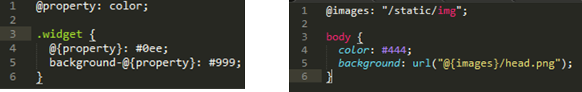
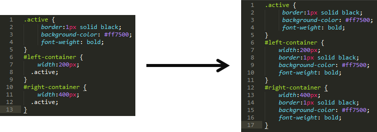
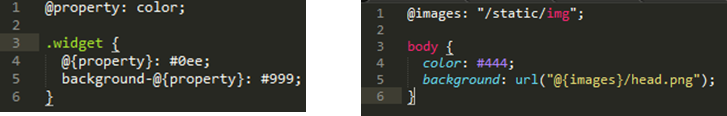
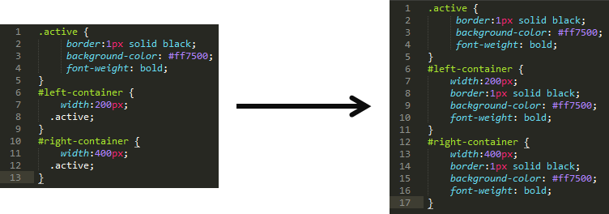

less - die lösung aller css-probleme?
29/06/2014
Wer sich bereits etwas eingehender mit CSS beschäftigt hat und etwas Erfahrung im Bereich der Webprogrammierung besitzt wird diese Frage vielleicht nicht stellen, dennoch ist sie berechtigt: ″Welche Probleme siehst du bei CSS? ″.
Nun, zunächst mal ist CSS eine gute Sache, die Trennung von Stil und Struktur ist ein guter Ansatz. Jeder der sich schon einmal mit Inline-Style aus der guten alten Zeit (not...) konfrontiert sah, weiß auch schlecht strukturiertes CSS zu schätzen.
Dennoch vernimmt man in Entwicklerkreisen immer wieder einen gewissen Unmut, wenn es darum geht CSS selbst zu schreiben und kein fertiges Framework wie Bootstrap zu verwenden. Warum?
Nun, CSS zählt nicht gerade zu den komfortabelsten Sprachen, die Syntax ist stark eingeschränkt und bietet wenig Möglichkeiten. Dazu kommt die nur gemächliche Weiterentwicklung des Standards, Neuerungen brauchen oft Jahre, bis sie in der breiten Masse der Browser angekommen und einheitlich integriert wurden. Trotz enormen Fortschritten in der Browserentwicklung in den letzten Jahren (vor allem beim unter Webentwicklern enorm beliebten Internet Explorer :P ) ist das Erstellen eigener Stylesheets immer noch eine unnötig komplizierte Aufgabe. Was fehlt sind syntaktische Möglichkeiten wie wiederverwendbare Variablen oder Funktionen. Hier scheint die Entwicklung etwas stehen geblieben zu sein.
An dieser Stelle setzt nun less an, welches sich selbst als CSS-Präprozessor beschreibt. Less bietet eine erweiterte Syntax, stellt somit eine Obermenge zur vorhandenen CSS-Syntax dar. Vor der Auslieferung an den Client wird less in reines CSS kompiliert, ist somit mit jedem aktuellen Browser kompatibel.
Doch nun zu den Fakten, was bietet less konkret und wie macht es mir als Entwickler das Leben einfacher?
Less bietet die Möglichkeit Variablen zu definieren und diesen Werte zuzuweisen. Auf die Werte der einmal definierten Variablen kann im gesamten CSS-Dokument zugegriffen werden. Das folgende Beispiel zeigt die Verwendung einer Variablen um eine gewisse Farbe nur einmal angeben zu mÜssen, bei Änderungen muss nun lediglich ein Wert an einer Stelle geändert werden. Die rechte Seite zeigt die Ausgabe des less-compilers nach der Übersetzung.
Doch Variablen lassen sich nicht nur dazu verwenden um die Werte von Attributen zu verändern. Ebenso ist es möglich Variablen als Selektoren einzusetzen:
Less setzt keine Grenzen bei der Verwendung, auch Pfade und Attributnamen lassen sie durch Variablen darstellen:

Etwas weiter als Variablen gehen Mixins. Mit ihnen lassen sich ganze Blöcke definieren, welche an beliebigen stellen wieder eingesetzt werden. Mixins können entweder normale CSS-Klassen sein, welche dann auch im ¨bersetzten CSS-Dokument vorhanden sind:

Durch das Hinzufügen von Klammern erscheint das Mixin nur noch an den eingebundenen Stellen, nicht mehr jedoch als separates CSS Element. So lassen sich auch Übergabe werte in das Mixin einbringen:
Auch die Verwendung von Schleifen um wiederkehrende sich stark ähnelnde Code-Segmente generieren zu lassen ist mit less möglich:
Ist das schon alles? Bei Weitem noch nicht, less bietet noch etliche weiter Highlights, welche die Entwicklung von Stylesheets deutlich angenehmer gestalten. Diese würden allerdings den Umfang dieses Artikels bei Weitem sprengen. An dieser Stelle möchte ich auf die offizielle Seite des less-Projektes verweisen, auf welcher sich auch eine vollständige Dokumentation befindet: lesscss.org
Zu guter letzt folgt hier noch eine schnelle Anleitung zu Installation und Verwendung von less:
Less ist als Node Paket über den Node-Pakage-Manager installierbar (Node sollte bereits installiert sein). Das Übersetzen einer less Datei in eine CSS Datei erfolgt mit dem Aufruf des less Compilers unter Angabe der beiden Dateinamen:
Aber Moment, was ist den mit der Frage vom Anfang, löst less wirklich alle Probleme mit denen man sich als CSS Entwickler konfrontiert sieht? Nun, Einige bestimmt, je nachdem wie komplex die Stylesheets sind, bietet less enormes Potential zur Zeitersparnis. Allerdings wird less nicht nativ durch den Browser unterstützt, sondern muss zunächst übersetzt werden. Hieraus entsteht ein weiterer Schritt in der Build-Pipeline was diese weiter kompliziert. Am Ende muss jeder Entwickler selbst entscheiden ob er less verwenden möchte oder nicht. Ich kann nur Jedem raten es einmal auszuprobieren und sich eine eigene Meinung zu bilden. Ich hoffe mein Artikel hat hierzu vielleicht den Anstoss gegeben.
So, jetzt bin ich wirklich am Ende - viel Spass mit less.
Dennoch vernimmt man in Entwicklerkreisen immer wieder einen gewissen Unmut, wenn es darum geht CSS selbst zu schreiben und kein fertiges Framework wie Bootstrap zu verwenden. Warum?
Nun, CSS zählt nicht gerade zu den komfortabelsten Sprachen, die Syntax ist stark eingeschränkt und bietet wenig Möglichkeiten. Dazu kommt die nur gemächliche Weiterentwicklung des Standards, Neuerungen brauchen oft Jahre, bis sie in der breiten Masse der Browser angekommen und einheitlich integriert wurden. Trotz enormen Fortschritten in der Browserentwicklung in den letzten Jahren (vor allem beim unter Webentwicklern enorm beliebten Internet Explorer :P ) ist das Erstellen eigener Stylesheets immer noch eine unnötig komplizierte Aufgabe. Was fehlt sind syntaktische Möglichkeiten wie wiederverwendbare Variablen oder Funktionen. Hier scheint die Entwicklung etwas stehen geblieben zu sein.
An dieser Stelle setzt nun less an, welches sich selbst als CSS-Präprozessor beschreibt. Less bietet eine erweiterte Syntax, stellt somit eine Obermenge zur vorhandenen CSS-Syntax dar. Vor der Auslieferung an den Client wird less in reines CSS kompiliert, ist somit mit jedem aktuellen Browser kompatibel.
Doch nun zu den Fakten, was bietet less konkret und wie macht es mir als Entwickler das Leben einfacher?
Variablen:
Less bietet die Möglichkeit Variablen zu definieren und diesen Werte zuzuweisen. Auf die Werte der einmal definierten Variablen kann im gesamten CSS-Dokument zugegriffen werden. Das folgende Beispiel zeigt die Verwendung einer Variablen um eine gewisse Farbe nur einmal angeben zu mÜssen, bei Änderungen muss nun lediglich ein Wert an einer Stelle geändert werden. Die rechte Seite zeigt die Ausgabe des less-compilers nach der Übersetzung.
Doch Variablen lassen sich nicht nur dazu verwenden um die Werte von Attributen zu verändern. Ebenso ist es möglich Variablen als Selektoren einzusetzen:
Less setzt keine Grenzen bei der Verwendung, auch Pfade und Attributnamen lassen sie durch Variablen darstellen:

Mixins:
Etwas weiter als Variablen gehen Mixins. Mit ihnen lassen sich ganze Blöcke definieren, welche an beliebigen stellen wieder eingesetzt werden. Mixins können entweder normale CSS-Klassen sein, welche dann auch im ¨bersetzten CSS-Dokument vorhanden sind:

Durch das Hinzufügen von Klammern erscheint das Mixin nur noch an den eingebundenen Stellen, nicht mehr jedoch als separates CSS Element. So lassen sich auch Übergabe werte in das Mixin einbringen:
Schleifen:
Auch die Verwendung von Schleifen um wiederkehrende sich stark ähnelnde Code-Segmente generieren zu lassen ist mit less möglich:
Ist das schon alles? Bei Weitem noch nicht, less bietet noch etliche weiter Highlights, welche die Entwicklung von Stylesheets deutlich angenehmer gestalten. Diese würden allerdings den Umfang dieses Artikels bei Weitem sprengen. An dieser Stelle möchte ich auf die offizielle Seite des less-Projektes verweisen, auf welcher sich auch eine vollständige Dokumentation befindet: lesscss.org
Zu guter letzt folgt hier noch eine schnelle Anleitung zu Installation und Verwendung von less:
Less ist als Node Paket über den Node-Pakage-Manager installierbar (Node sollte bereits installiert sein). Das Übersetzen einer less Datei in eine CSS Datei erfolgt mit dem Aufruf des less Compilers unter Angabe der beiden Dateinamen:
Aber Moment, was ist den mit der Frage vom Anfang, löst less wirklich alle Probleme mit denen man sich als CSS Entwickler konfrontiert sieht? Nun, Einige bestimmt, je nachdem wie komplex die Stylesheets sind, bietet less enormes Potential zur Zeitersparnis. Allerdings wird less nicht nativ durch den Browser unterstützt, sondern muss zunächst übersetzt werden. Hieraus entsteht ein weiterer Schritt in der Build-Pipeline was diese weiter kompliziert. Am Ende muss jeder Entwickler selbst entscheiden ob er less verwenden möchte oder nicht. Ich kann nur Jedem raten es einmal auszuprobieren und sich eine eigene Meinung zu bilden. Ich hoffe mein Artikel hat hierzu vielleicht den Anstoss gegeben.
So, jetzt bin ich wirklich am Ende - viel Spass mit less.